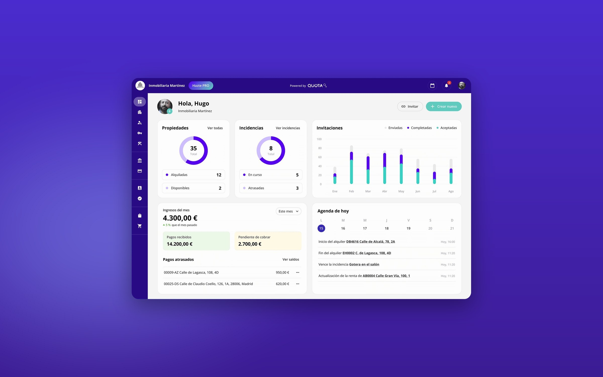
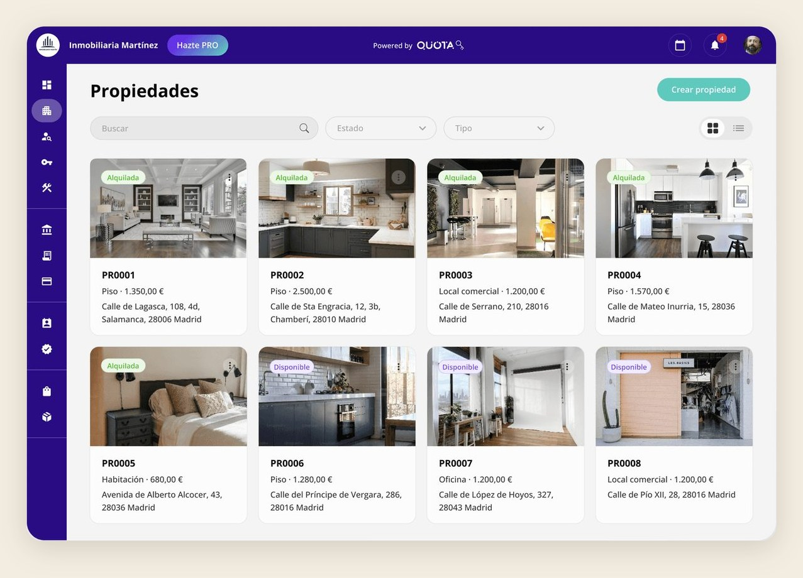

Rental management made simpler for agencies
The challenge
Rental agencies in Spain had to offer more and more management services, but they still ran them on old processes: spreadsheets, phone calls and disconnected tools. Quota wanted to bring all that work into one platform, simple enough for managers with no time to learn a new system.
What I did
For three years I ran continuous discovery with managers, Customer Care and Sales. I designed the whole platform and built its design system from zero, evolving it with every new module.
The outcome
We launched 15+ features and a gamified insurance app. Managers selected tenants twice as fast and did more of their daily work inside Quota.
Decisions

Impact
Each module brought one more part of the managers’ work into Quota, and average session time grew 25%. The platform and the insurance app shared one design system, which grew with the product.
features launched in three years
products: the management platform and the insurance app
faster tenant selection
fewer insurance requests to Customer Care
Learnings
Customer Care is a research team
Customer Care and Sales tickets showed real pain faster and more often than any research session I ran.
Less friction doesn’t solve adoption
Agencies that used Quota stayed and used it more. The harder problem was convincing them to switch tools in the first place, and without enough new customers, Quota closed in 2024.
Fit the customers who already said yes
Getting an agency to start a trial was the hardest part, so when one did, we focused on a solution that fit them. Before product-market fit, adapting to the customers who already show interest matters more than building features for customers you don’t have yet.